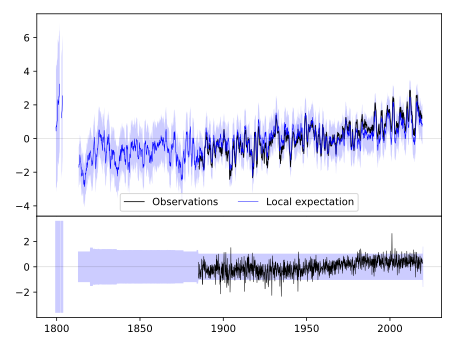
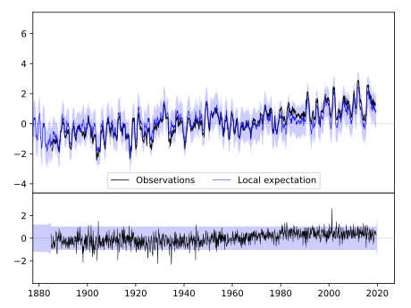
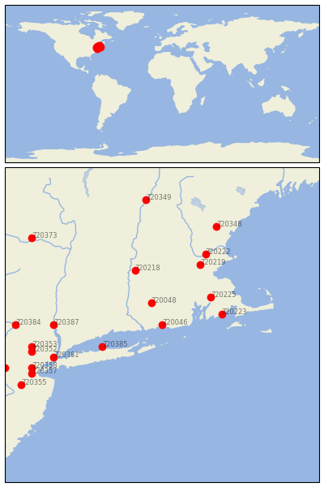

GROTON [USA]


| Neighbour | Name | Country | Distance | Lon/Lat | Years |
|---|
| 720046 | GROTON | USA | 0 | -72.0, 41.4 | 1884-2019 |
| 720048 | STORRS | USA | 47 | -72.2, 41.8 | 1884-2019 |
| 720225 | TAUNTON | USA | 93 | -71.1, 41.9 | 1871-2019 |
| 720223 | NEW BEDFORD | USA | 94 | -70.9, 41.6 | 1812-2019 |
| 720385 | SETAUKET STRONG | USA | 102 | -73.1, 41.0 | 1876-2019 |
| 720218 | AMHERST | USA | 118 | -72.5, 42.4 | 1836-2019 |
| 720219 | BEDFORD | USA | 135 | -71.3, 42.5 | 1885-2019 |
| 720222 | LAWRENCE | USA | 158 | -71.2, 42.7 | 1856-2019 |
| 720387 | WEST POINT | USA | 166 | -74.0, 41.4 | 1824-2019 |
| 720381 | NY CITY CNTRL PARK | USA | 180 | -74.0, 40.8 | 1821-2019 |
| 720353 | CHARLOTTEBURG RSVR | USA | 205 | -74.4, 41.0 | 1890-2019 |
| 720352 | BOONTON 1 SE | USA | 208 | -74.4, 40.9 | 1876-2019 |
| 720348 | DURHAM | USA | 216 | -71.0, 43.2 | 1884-2019 |
| 720358 | PLAINFIELD | USA | 220 | -74.4, 40.6 | 1876-2019 |
| 720357 | NEW BRUNSWICK 3 SE | USA | 225 | -74.4, 40.5 | 1863-2019 |
| 720384 | PORT JERVIS | USA | 225 | -74.7, 41.4 | 1880-2019 |
| 720355 | HIGHTSTOWN 2 W | USA | 250 | -74.6, 40.3 | 1876-2019 |
| 720349 | HANOVER | USA | 256 | -72.3, 43.7 | 1834-2019 |
| 720354 | FLEMINGTON 5 NNW | USA | 259 | -74.9, 40.6 | 1887-2019 |
| 720373 | GLOVERSVILLE | USA | 265 | -74.4, 43.0 | 1892-2019 |